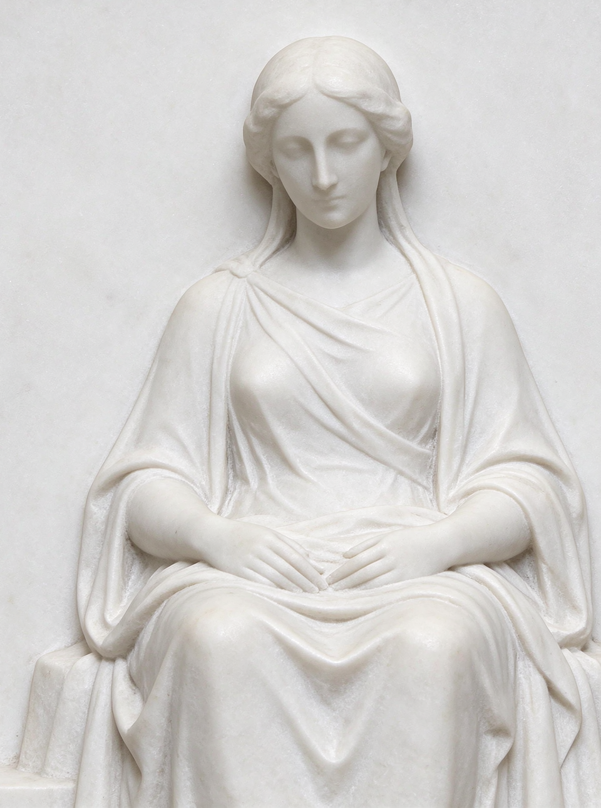

Algo te duele
y no sabes qué es.
Así que haces lo que todos: lo buscas.
Encuentras cinco.
Reseñas. Posts. Sitio web.
Y eliges al que más veces apareció.
Los otros podrían ser mejores.
Pero no tenías cómo saberlo.
Si estás viendo esto,
tú eres uno de los cinco.